STM32U5 vs MAX78000 — ai85kws20netv3
Cross-platform online inference comparison. STM32U5: v0 float32, v1 INT8, v2 pruned INT8. MAX78000: v0 float32 SW, v1 INT8 CNN accelerator.
U5 v0 float32
U5 v1 INT8
U5 v2 pruned
MAX78000 v0
MAX78000 v1
Key Metrics
| Metric | Unit | Direction | U5 v0 float32 | U5 v1 INT8 | U5 v2 pruned | MAX78000 v0 | MAX78000 v1 |
|---|---|---|---|---|---|---|---|
| CNN latency avg | ms | lower | 397.24 | 173.84 | 152.92 | 1.8494 | 1.7110 |
| Cycles avg | cycles | lower | 63,558,802 | 27,814,386 | 24,467,522 | 72,268 | 66,871 |
| Throughput | inf/s | higher | 2.5174 | 5.7524 | 6.5393 | 540.73 | 584.45 |
| End-to-end lower bound | ms | lower | 1,421.24 | 1,197.84 | 1,176.92 | 1,025.85 | 1,025.71 |
| Text | B | lower | 741,493 | 256,056 | 232,160 | 390,288 | 366,040 |
| Data | B | lower | 14,876 | 20,708 | 20,708 | 2,604 | 2,604 |
| BSS | B | lower | 228,916 | 164,440 | 160,344 | 35,956 | 36,140 |
| Static SRAM | B | lower | 243,792 | 185,148 | 181,052 | 38,560 | 38,744 |
| ELF size | B | lower | 2,750,224 | 2,357,424 | 2,335,012 | 2,327,128 | 2,254,856 |
| AI weights | B | lower | 684,404 | 172,232 | 148,600 | ||
| AI activations | B | lower | 66,832 | 51,200 | 47,104 | ||
| MAC ops | MAC | lower | 8,797,410 | 8,915,270 | 7,623,538 | 8,345,344 | 7,207,328 |
| MOPS/s | MOPS/s | higher | 22.146 | 51.285 | 49.853 | 4,512.55 | 4,212.35 |
| Current | mA | lower | 24.095 | 22.364 | 22.879 | 41.415 | 39.638 |
| Power | W | lower | 0.0790317 | 0.0733549 | 0.0750432 | 0.153236 | 0.146662 |
| Energy/inference | uJ | lower | 31,394.71 | 12,751.97 | 11,475.73 | 283.39 | 250.94 |
| MAC/J | MAC/J | higher | 280,219,485 | 699,128,964 | 664,318,290 | 29,448,369,916 | 28,721,395,187 |
Cross-Platform Relative Improvements
Positive = MAX78000 variant is better for that metric.
| Metric | Direction | mx_v0 vs u5_v0 | mx_v1 vs u5_v1 | mx_v1 vs u5_v2 |
|---|---|---|---|---|
| CNN latency avg | lower | +99.53% | +99.02% | +98.88% |
| Cycles avg | lower | +99.89% | +99.76% | +99.73% |
| Throughput | higher | +21379.92% | +10060.10% | +8837.56% |
| End-to-end lower bound | lower | +27.82% | +14.37% | +12.85% |
| Text | lower | +47.36% | -42.95% | -57.67% |
| Data | lower | +82.50% | +87.43% | +87.43% |
| BSS | lower | +84.29% | +78.02% | +77.46% |
| Static SRAM | lower | +84.18% | +79.07% | +78.60% |
| ELF size | lower | +15.38% | +4.35% | +3.43% |
| AI weights | lower | |||
| AI activations | lower | |||
| MAC ops | lower | +5.14% | +19.16% | +5.46% |
| MOPS/s | higher | +20276.15% | +8113.68% | +8349.61% |
| Current | lower | -71.88% | -77.24% | -73.25% |
| Power | lower | -93.89% | -99.94% | -95.44% |
| Energy/inference | lower | +99.10% | +98.03% | +97.81% |
| MAC/J | higher | +10409.04% | +4008.17% | +4223.44% |
Power Peak Summary
| Variant | Platform | Peaks | Avg duration | Avg current | Avg energy (total) | Avg energy (excess) |
|---|---|---|---|---|---|---|
| U5 v0 float32 | STM32U5 | 6 | 397.24 ms | 24.095 mA | 31.395 mJ | 3801.75 µJ |
| U5 v1 INT8 | STM32U5 | 6 | 171.92 ms | 22.364 mA | 12.611 mJ | 447.39 µJ |
| U5 v2 pruned | STM32U5 | 6 | 153.10 ms | 22.879 mA | 11.489 mJ | 814.25 µJ |
| MAX78000 v0 | MAX78000 | 6 | 1.76 ms | 41.415 mA | 0.270 mJ | 167.89 µJ |
| MAX78000 v1 | MAX78000 | 6 | 1.67 ms | 39.638 mA | 0.245 mJ | 154.41 µJ |
Plots
01_normalized_score_radar
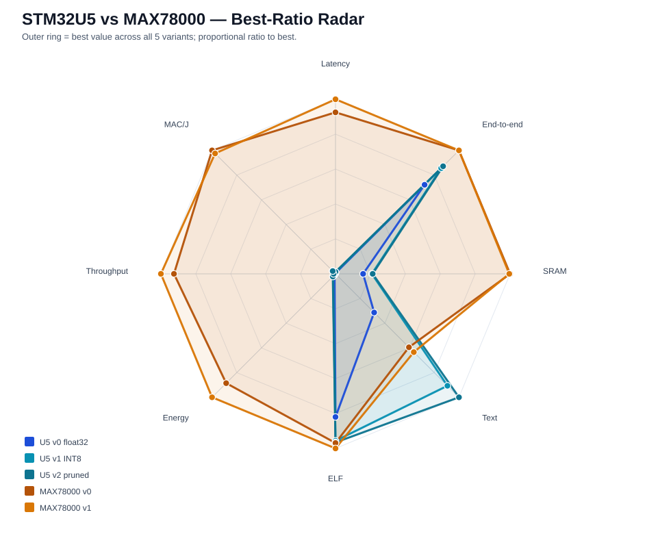
02_memory_breakdown
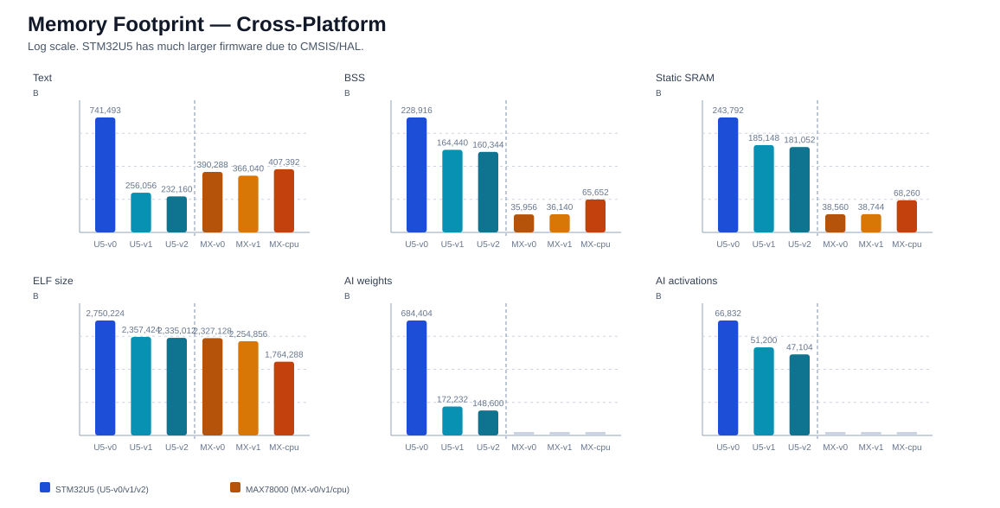
03_latency_throughput_energy
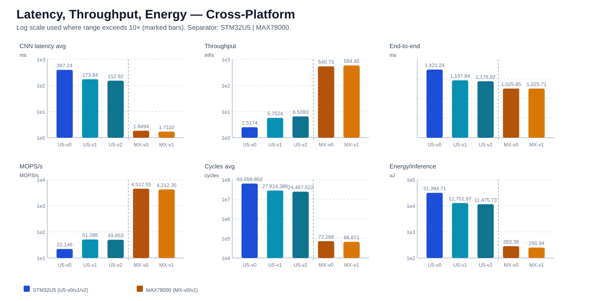
04_energy_efficiency
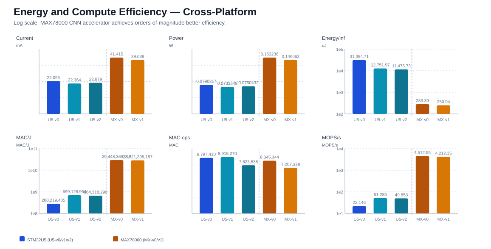
07_all_numeric_metrics_heatmap
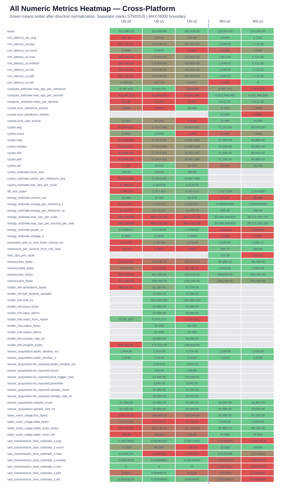
09_log_metric_overview
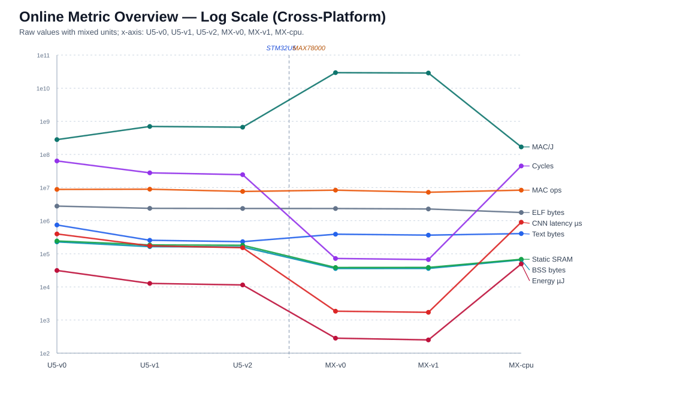
10_latency_sram_energy_frontier
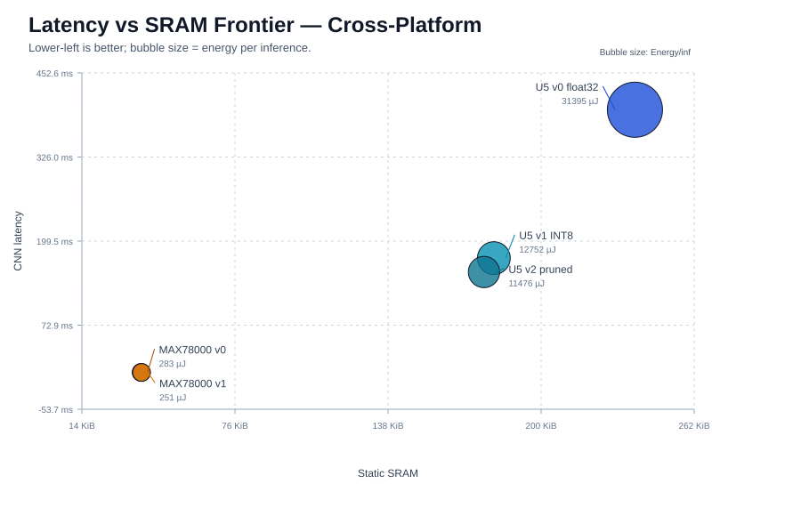
11_latency_energy_frontier
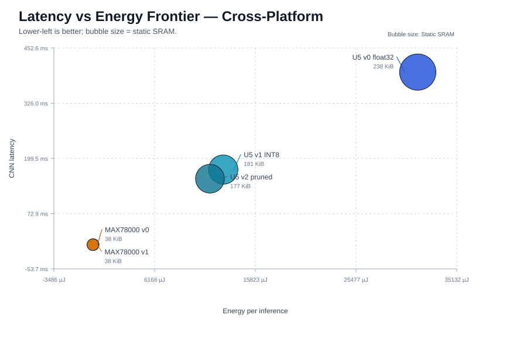
12_text_sram_frontier
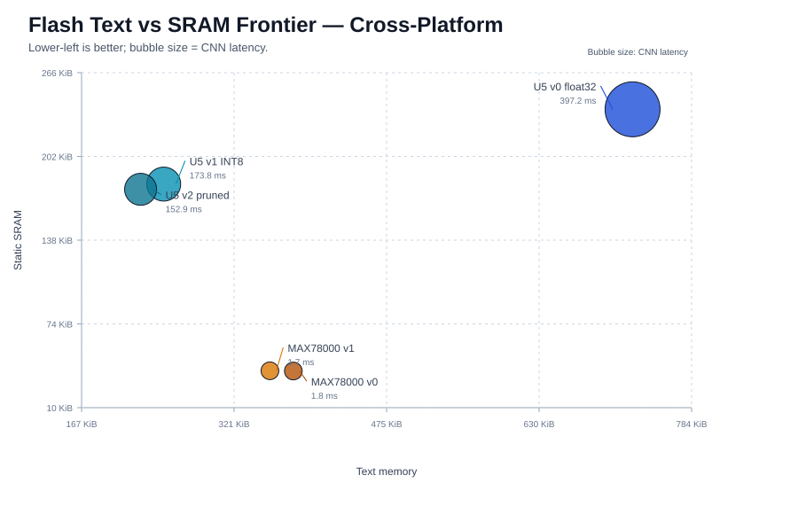
13_throughput_energy_frontier
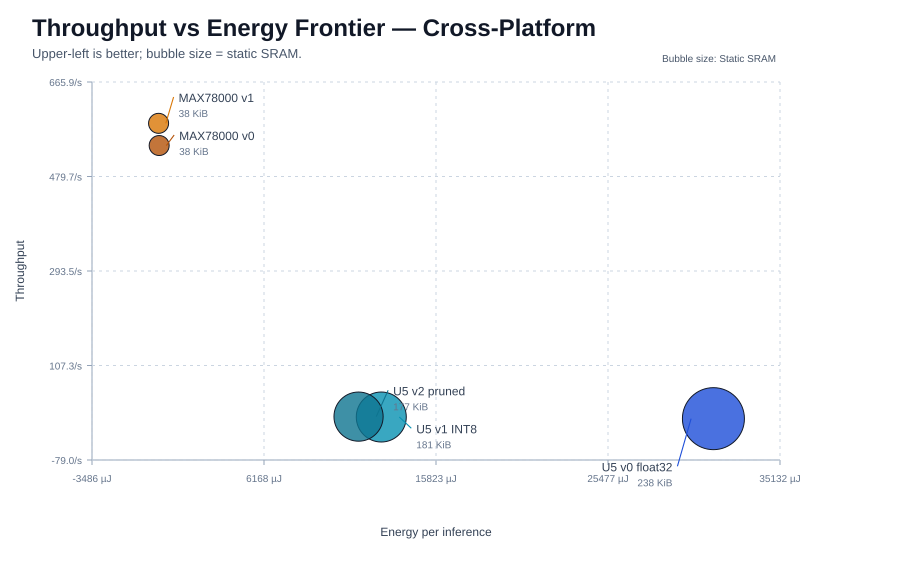
16_cross_platform_improvement_heatmap
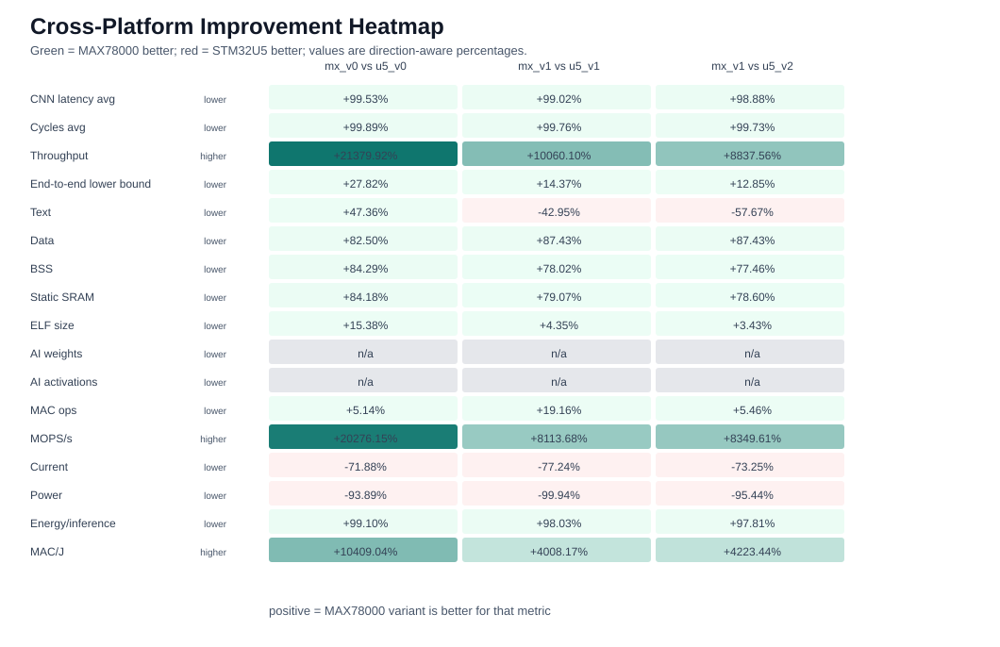
17_mx_v0_vs_u5_v0_improvement_bars
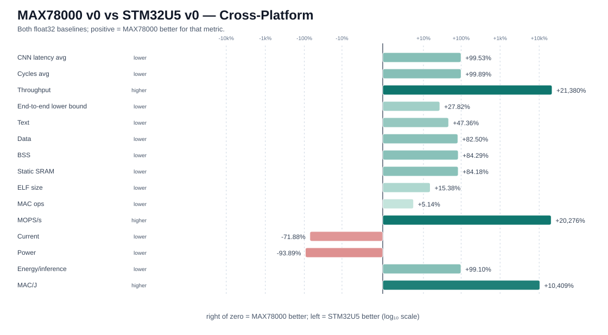
18_mx_v1_vs_u5_v1_improvement_bars
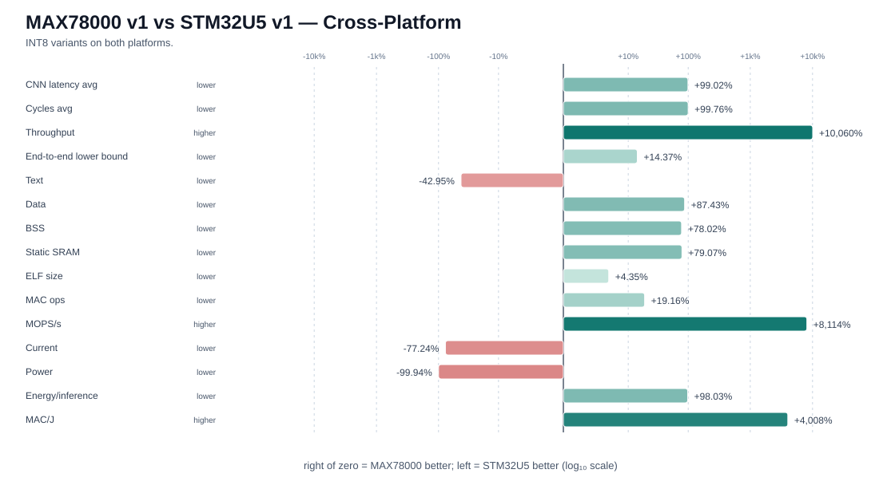
19_mx_v1_vs_u5_v2_improvement_bars
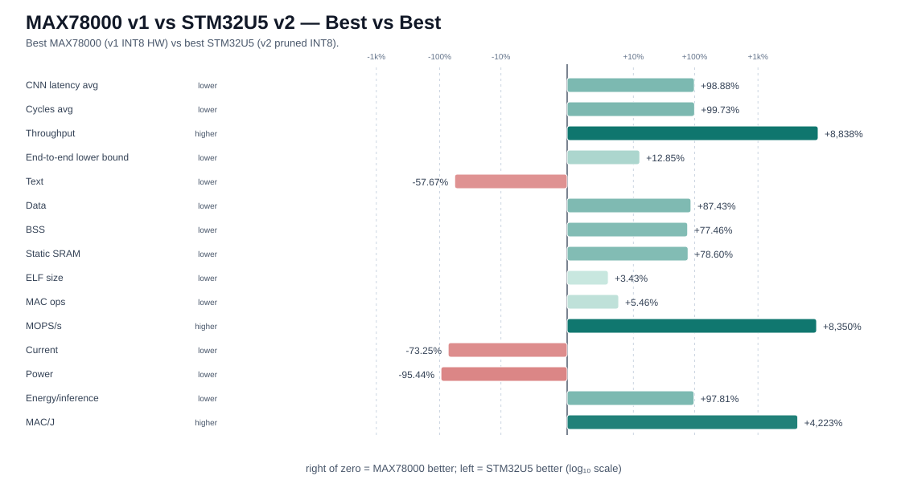
23_power_representative_inference_window_overlay
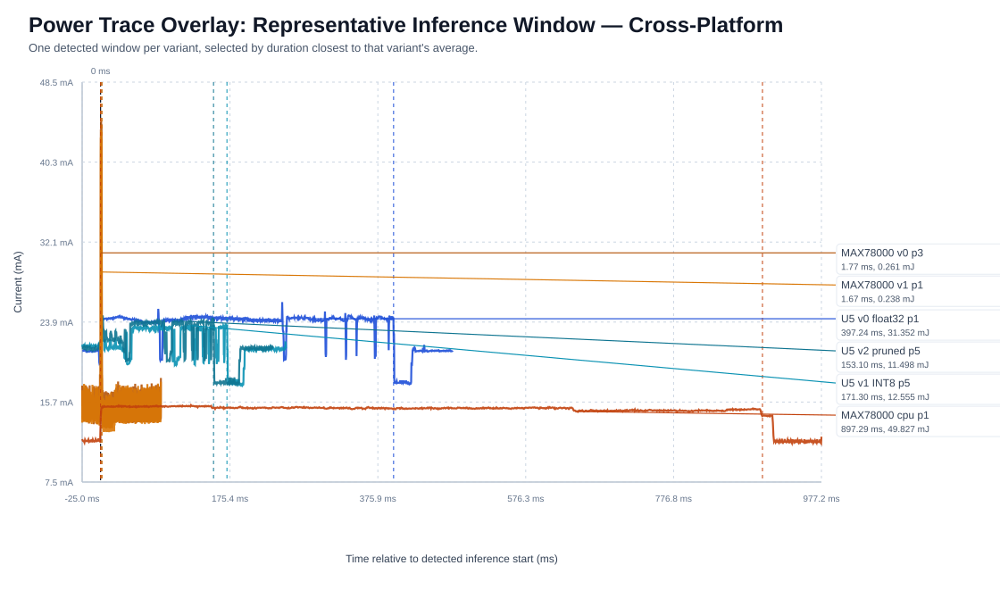
24_power_peak03_inference_window_overlay
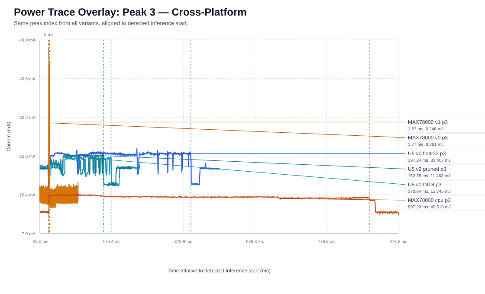
26_power_peak_average_bars
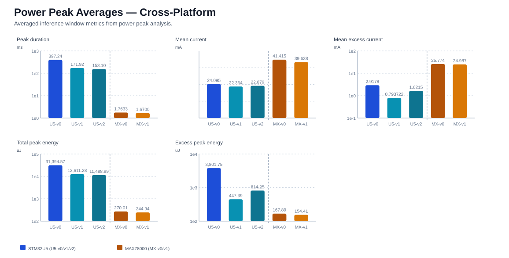